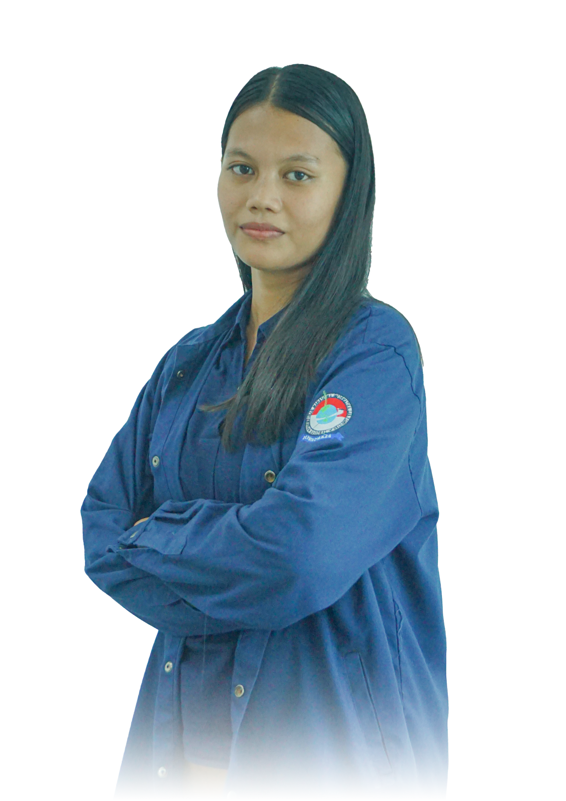

Serbina Savitri. S
Saya adalah seorang mahasiswa Program Studi Teknik Informatika di Universitas Muhammadiyah Riau. Saat ini, saya berada di semester empat (4) dengan IPK 3,71. Saya memiliki pengalaman sebagai anggota OSIS saat SMA. Saya memiliki kemampuan dasar tentang ilmu komputer dan tertarik dengan bidang Pemograman. Saya selalu tertarik dengan dunia teknologi dan ingin terus memperdalam pengetahuan saya dibidang Pemograman. Kemampuan saya mencakup pemahaman sederhana tentang Pemograman, saya berkomitmen untuk mengaplikasikan pengetahuan dan keterampilan saya demi dapat mengikuti perkembangan teknologi saat ini.